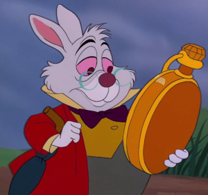

In what concerns the continuous evaluation solving exercises grade during the semester, you should submit until 23:59 of November 1st
(this exercise will still be available for submission after that deadline, but without counting towards your grade)
[to understand the context of this problem, you should read the class #04 exercise sheet]
In this problem you should submit a function as described. Inside the function do not print anything that was not asked!
The name of the .py source file you submit to Mooshak should NOT start with a digit (you will get an error if you submit it like that).

Just when you thought the adventures in Wonderland couldn’t get any more curious, the White Rabbit scurried into view, his pocket watch clutched tightly in his hands. He looked frantic, glancing around as if he were late for an important date."Oh dear! Oh dear!" he exclaimed, pausing just long enough to catch his breath. “You wouldn’t believe what I’ve just stumbled upon while looking at this confounded clock. I’ve discovered how words evolve! Fascinating creatures, those little words. But I’m late, I’m late! I need to understand this better, and you — yes, you — might just help me!"
Write a function evolve(initial, n) that given a string initial (made up of just letters 'A' and 'B') and an integer n, prints exactly n+1 lines showing first the initial string and then the next n generations of the string according to the following rules:
For instance, if we start with "A" and ask for n=4 generations, the following happens:
n=0: A initial
/ \
n=1: A B the initial single A spawned into AB by rule (A → AB), rule (B → A) couldn't be applied
/| \
n=2: A B A former string AB with all rules applied, A spawned into AB again, former B turned into A
/| | |\
n=3: A B A A B note all A's producing a copy of themselves in the first place, then a B, which turns ...
/| | |\ /| |
n=4: A B A A B A B A ... into an A one generation later, starting to repeat then
The following limits are guaranteed in all the test cases that will be given to your program:
| 1 ≤ |needle| ≤ 100 | size of the string to look for | |
| 1 ≤ |haystack| ≤ 100 | size of the string that should contain another string |
| Example Function Calls | Example Output |
evolve("A", 4)
print("---------------")
evolve("ABBA", 3)
print("---------------")
|
A AB ABA ABAAB ABAABABA --------------- ABBA ABAAAB ABAABABABA ABAABABAABAABAAB --------------- |